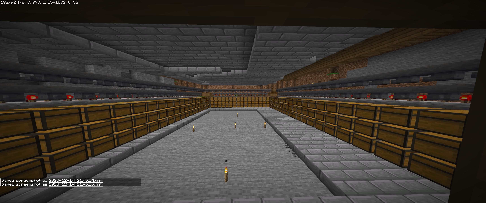
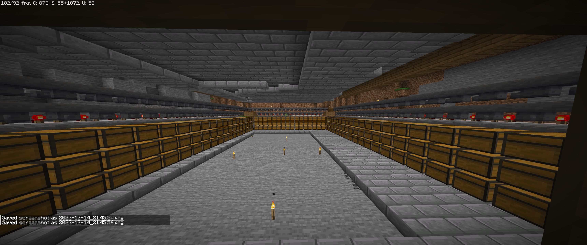

Danny - Der Virtuose Baumeister

Danny, auch bekannt als "RealDannyShady", ist der virtuose Baumeister auf unserem Minecraft-Server. Sein Haus ist nicht nur ein architektonisches Meisterwerk, sondern beherbergt auch eine beeindruckende Handelsstätte für Dorfbewohner im Keller. Danny legt Wert auf sowohl funktionale als auch ästhetische Aspekte seiner Konstruktionen. Als erfahrener Spieler teilt er gerne sein Wissen und seine Baufertigkeiten mit der Gemeinschaft, was ihn zu einer inspirierenden Persönlichkeit auf dem Server macht.
Danny - Der Virtuose Baumeister
Beschreibung von Danny's beeindruckenden Projekten auf dem Minecraft-Server.

 
